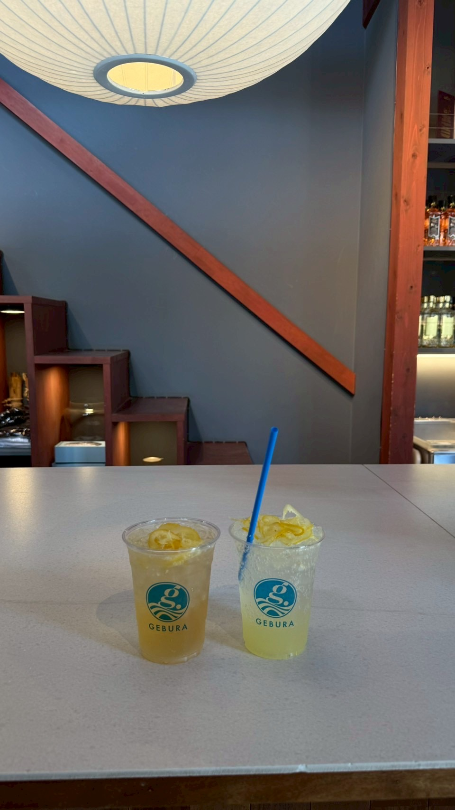
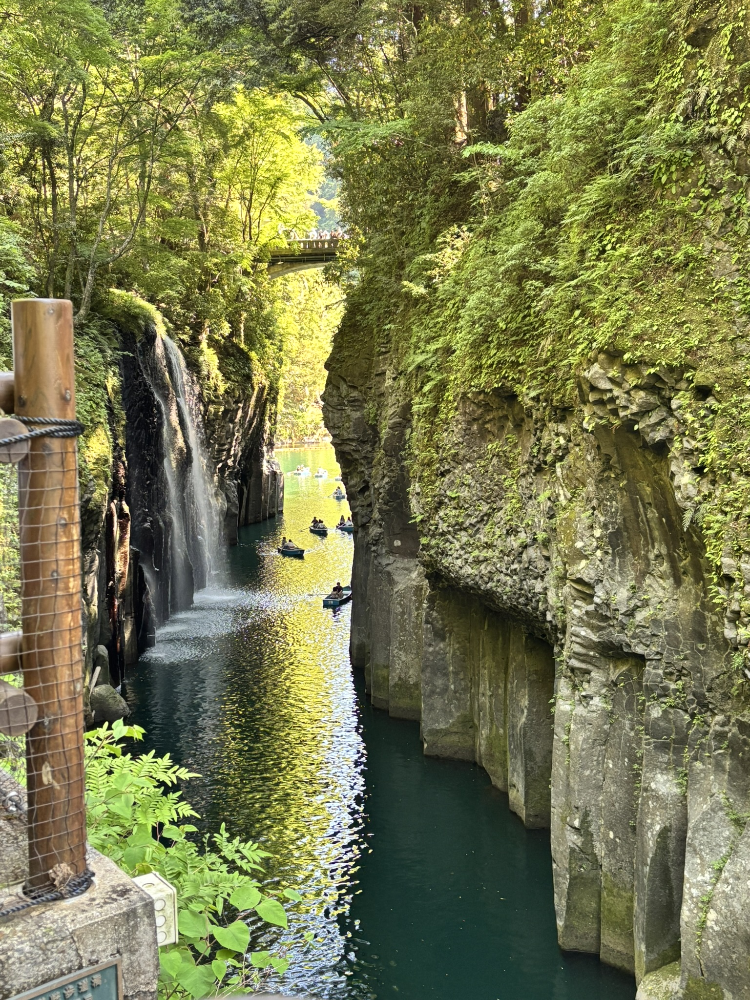

強み①｜「とにかく手間を減らしたい」を叶える一貫型SNS運用
投稿ネタ出し、画像・文章制作、投稿作業、簡易レポート作成までをまとめて行うため、
クライアント様は確認・判断に集中でき、実務は丸投げでOKです。
また、投稿スケジュール表や運用フローを事前に共有し、
「今何をしているのか」「次に何をするのか」が常に見える状態で運用します。
そのため、初めてSNS運用を外注する方でも安心してお任せいただけます。
継続しやすく、負担の少ないSNS運用を重視し、
長期的に成果につながるアカウント運用をサポートします。
強み②｜「ちゃんとした見た目にしたい」を叶える、統一感のあるSNS設計
SNSでは、投稿内容以前に「見た目の印象」や「統一感」が信頼感に直結します。
私はアカウント全体の見た目設計・雰囲気づくりを重視した運用を行っています。
写真のクオリティ、色味、文字組み、レイアウトを統一し、
どの投稿を見ても一目で
「きちんと管理されている」「プロっぽい」
と感じてもらえるアカウントを目指します。
単発の投稿ではなく、アカウント全体を一つのブランドとして捉え、
世界観・トーンを揃えた継続的な発信を行うことで、
見た目から信頼されるSNSアカウントを構築します。
強み③｜「素材がない」を解決する、現地撮影・写真提供対応
SNS運用において、
「投稿したいけど使える写真がない」「フリー素材だとイメージに合わない」
といった悩みは非常に多くあります。
私は実際に現地へ出向いての写真撮影にも対応できます。
お店・サービス・雰囲気が伝わる写真をもとにSNS運用を行うことが可能です。
[イメージ写真]

